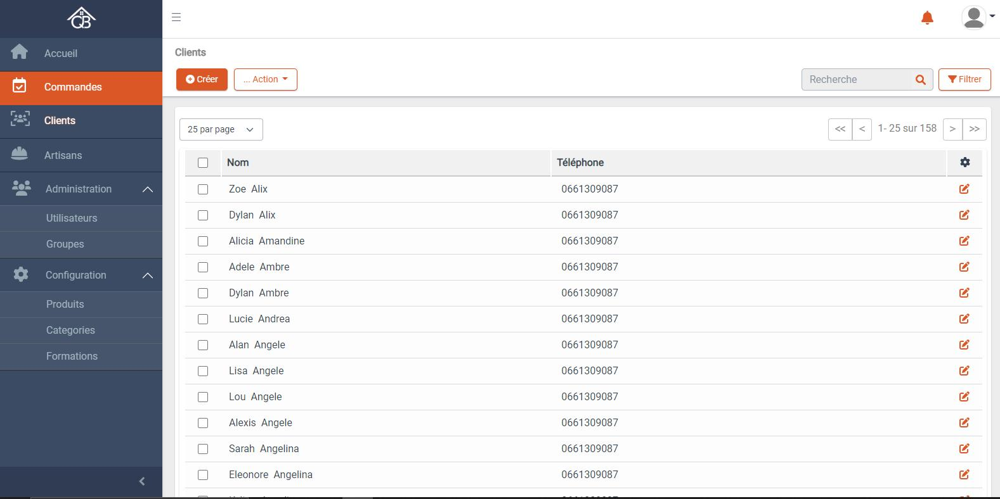

Une plateforme de services représente une entité cohérente avec un statut unique qui regroupe, pilote et coordonne divers services complémentaires afin d'accompagner dans leurs parcours respectifs des destinataires communs. Cette plateforme propose des prestations spécialisées dans l'univers de l'habitat. Elle met en relation des particuliers et des artisans, dans le cadre de services rémunérés de bricolage,décoration ou d'entretien.
Objectif de la plateforme :
Aprés l'étude que l'équipe APTUS a effectuée, et selon les besoins des clients, nous opterons å développer une Application web administratif .Cette Application web aura pour objectifs : Faciliter la collaboration, la mise en relation et la négociation entre les artisans et les particuliers. Avoir un cadre de travail commun, notamment par la mise disposition d'une base de données de retours d'expériences et de conseils pratiques émanant de projets précédemment réalisés. Avoir une entité cohérente avec un statut unique qui regroupe, pilote et coordonne , divers services complémentaires afin d'accompagner dans leurs parcours respectifs des destinataires communs.
L’interface d’accueil
Cette interface permet à un support de parcourir les différentes interfaces de l’application web
L’interface de modification et suppression d’image
Cette interface permet à un support de modifier ou supprimer son image

Gestion des clients
Cette interface permet à un support de faire les taches suivantes : - Accéder à l’interface de consultation d’un client - Accéder à l’interface de création d’un client - Accéder à l’interface de modification d’un client - Supprimer des clients - Filtrage rapide - Filtrer avancer - Afficher un nombre spécifier des clients - La pagination
L’interface de consultation d’un client
Cette interface permet à un support de faire les taches suivantes : - Accéder à l’interface de création d’un client - Accéder à l’interface de modification de client consulté - Supprimer le client consulté - Modifier l’image de client consulté - Ajouter des commentaires (Modifier,supprimer)
Objectif de la plateforme :
Aprés l'étude que l'équipe APTUS a effectuée, et selon les besoins des clients, nous opterons å développer une Application web administratif .Cette Application web aura pour objectifs : Faciliter la collaboration, la mise en relation et la négociation entre les artisans et les particuliers. Avoir un cadre de travail commun, notamment par la mise disposition d'une base de données de retours d'expériences et de conseils pratiques émanant de projets précédemment réalisés. Avoir une entité cohérente avec un statut unique qui regroupe, pilote et coordonne , divers services complémentaires afin d'accompagner dans leurs parcours respectifs des destinataires communs.